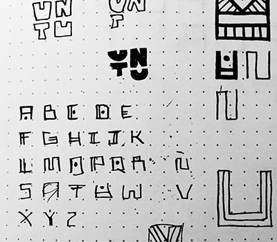
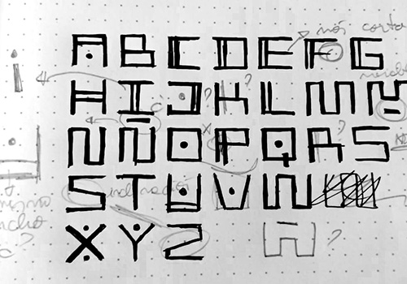
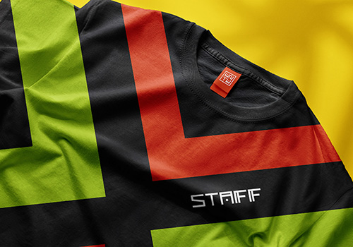
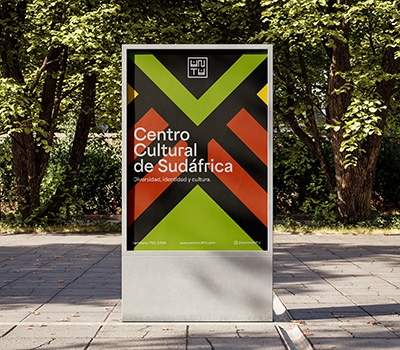

UNTU South Africa
Cultural
Center
Center
/festival identity /identity design /poster design
Before this project, I knew very little about South Africa. Throughout the process, I learned about the country's strength, optimism, and the richness of its traditions and cultures. I really tried to capture the spirit of this beautiful country and its diverse tribes through typography, color, and abstract illustrations. I even found myself creating my own typography to represent it authentically. Designing such a large system and ensuring that all the pieces felt cohesive was a big challenge, but the final result made me really happy.
course
design workshop 3
teacher
Esteban Ibarra
year realized
2024

more of this proyect




